CertSmith Readme
Instructions for obtaining certificates, keeping them renewed and deploying them to devices.
What CertSmith does
CertSmith obtains TLS certificates from a certificate authority (CA), keeps them renewed before they expire, and installs them on the devices that use them (firewalls, management servers, hypervisors and so on) through each device's own API. It then connects to those devices to confirm that they are serving the new certificate, and reports any problem.
Domain ownership is always validated by publishing a temporary DNS record (the DNS-01 challenge). This works for host names and for wildcards, and it requires no inbound access to this server.
which CA, and the DNS credentials that prove the names→ Certificate
names, key type, renewal→ Targets
the devices that use it
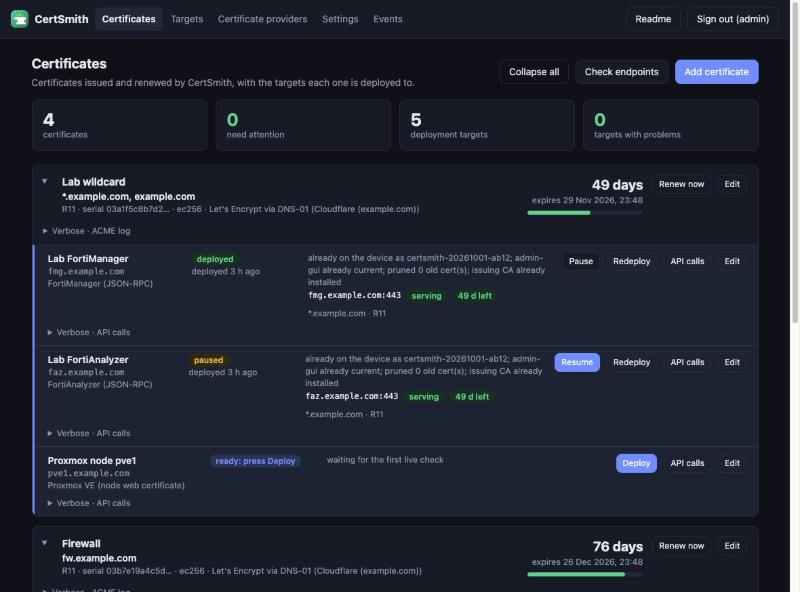
Quick start
The order matters, and CertSmith holds you to it: until a provider exists a certificate cannot be added, and until a certificate exists a target that receives one cannot be added. The Set up in this order checklist at the top of the Certificates, Targets and Certificate providers pages shows where you are, and goes away once all three steps are done.
- Set the account email. Open Settings and enter an address under Let's Encrypt (ACME). Leave the directory on Production for publicly trusted certificates. Use Staging for testing: it issues untrusted test certificates with relaxed limits.
- Add a certificate provider. Open Certificate providers, select Add provider, keep Let's Encrypt, then choose the DNS provider (for example Cloudflare) and enter its API token. Select Test DNS challenge to verify the credentials before continuing.
- Add a certificate. On Certificates, select Add certificate. Enter a name, the domain names (one per line; wildcards such as
*.example.comare supported) and the provider. - Wait for issuance. Issuing takes from a few seconds to a few minutes. Verbose · ACME log under the certificate shows its progress.
- Add a target. Select Add target under the certificate, choose the vendor and type, enter the address and API token, select where the certificate is used, and select Test connection.
- Deploy the first time manually. The first deployment to a device always requires selecting Deploy. Renewals are deployed automatically afterwards.
- Verify. The target shows deployed and serving. Check endpoints on the Certificates page re-checks every device immediately.
Certificate providers
A provider defines the CA that issues the certificate and the DNS credentials used to validate domain ownership. Each certificate is assigned one provider.
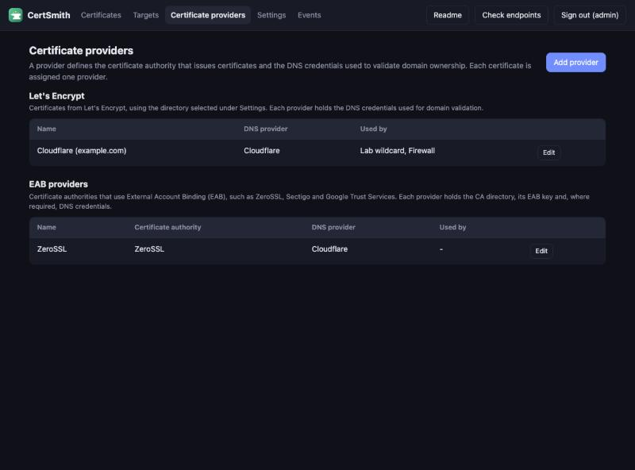
Let's Encrypt
Let's Encrypt issues free certificates. The account email and the directory (production or staging) are set once under Settings; a provider needs only DNS credentials.
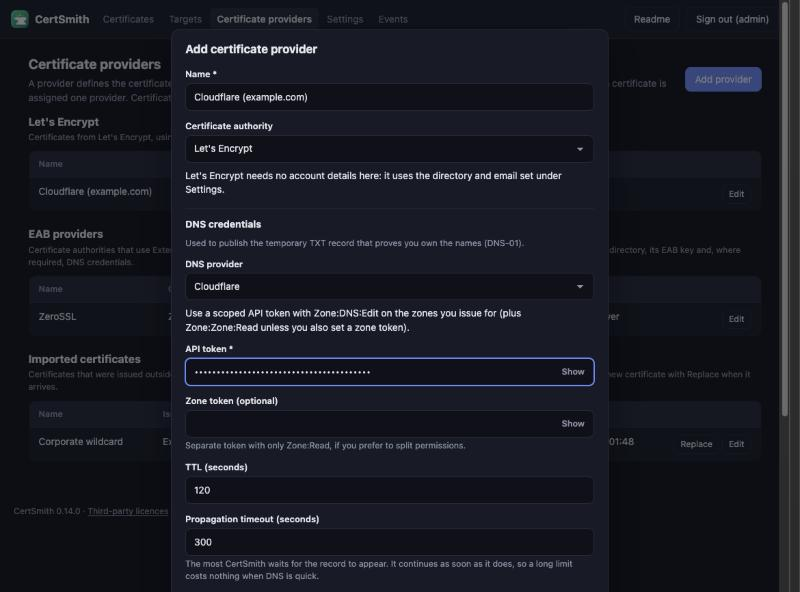
For Cloudflare, create an API token restricted to the required zones, with the permissions Zone → DNS → Edit and Zone → Zone → Read. CertSmith creates and removes only the temporary _acme-challenge records.
Other CAs: External Account Binding (EAB)
Some CAs (ZeroSSL, Sectigo, Google Trust Services and others) bind each ACME account to a customer account using a key ID and an HMAC key, which the CA displays once. Select Another CA (External Account Binding) in the dialog, then:
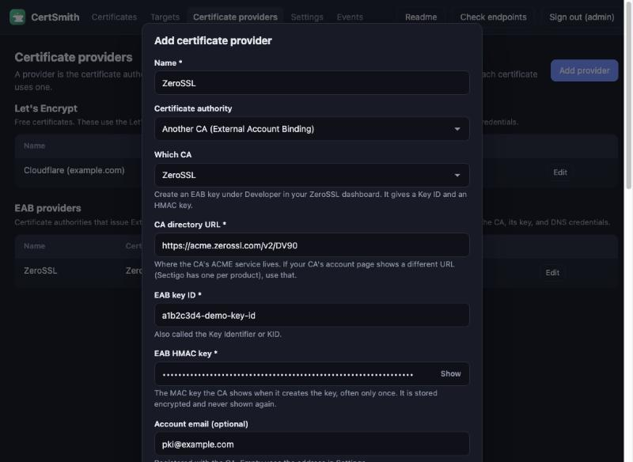
- Select the CA. The directory URL is filled in for known CAs and can be edited. Sectigo uses a different URL for each product, so copy the one shown on the account page. For a CA that is not listed, select Another CA and enter its directory URL.
- Enter the EAB key ID and the HMAC key exactly as the CA displays them. The HMAC key is stored encrypted and is never shown again.
- Optionally enter an account email for that CA. If left empty, the address from Settings is used.
- Select Check CA account. CertSmith authenticates to the CA with these credentials (creating the account on first use) and reports the CA's response. No certificate is requested.
The CA of an existing provider cannot be changed; add a new provider instead. A provider that a certificate uses cannot be deleted.
Standing record: dns-persist-01 (experimental)
With DNS-01, CertSmith writes a temporary TXT record every time it issues or renews, so it needs DNS credentials permanently. With dns-persist-01 you publish one TXT record per domain, once. It names the CA and your ACME account, and the CA accepts it for as long as it stays in place. Issuing and renewing then write nothing to DNS, and the provider needs no DNS credentials at all.
- In the provider dialog, set Validation method to dns-persist-01. Optionally set Authorisation ends: the date is written into the record, and CertSmith alerts 30 days before it.
- Select Check CA account so the account exists, then add a certificate that uses the provider.
- On the certificate, select Check record. CertSmith asks the CA what it needs and shows the TXT record name and value for each domain, with a Copy button.
- Add that record at your DNS provider, then select Check record again. It reads in place when the record matches.
- Issue the certificate. CertSmith looks for the record before it asks the CA and stops with a message naming the record if it is missing.
accounturi) adds a second lock.CertSmith checks the records once a day and alerts when one is missing or no longer matches (A dns-persist-01 record is missing or no longer matches), and 30 days before the end date. If the provider also has DNS credentials, they are the fallback: should the record be missing, or the CA not offer the challenge, that issuance uses DNS-01 and the log says so.
Few CAs offer this challenge yet, and it is still an IETF draft. The support in CertSmith is built on the draft as the CA test server Pebble implements it, and is marked experimental. CertSmith cannot publish the record for you: the DNS providers it uses write only the temporary challenge record.
Certificates
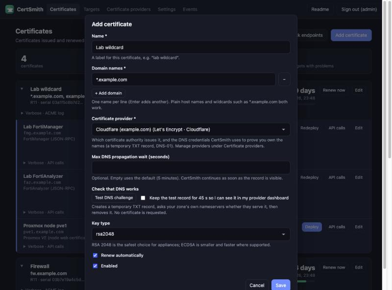
| Field | What it does |
|---|---|
| Name | A descriptive label, such as lab wildcard. |
| Domain names | One per line. Plain names (fw.example.com) and wildcards (*.example.com) both work. A wildcard does not cover the bare domain: add example.com as well if you need it. |
| Certificate provider | Which CA issues it, and the DNS credentials used to prove the names. Providers are grouped by CA. |
| Max DNS propagation wait | Optional upper limit for the wait for the challenge record to appear. If empty, 5 minutes is used. CertSmith continues as soon as the record is visible, so a higher limit adds no delay when DNS is fast. |
| Test DNS challenge | Creates a temporary TXT record, checks that it can be seen, then removes it. No certificate is requested. |
| Key type | RSA 2048 is the most widely supported choice for appliances. ECDSA (ec256, ec384) produces smaller certificates and is faster where the device supports it. |
| Renew automatically | On by default. Renewal happens when fewer than the configured number of days remain (30 by default, under Settings). |
| Enabled | Disable to stop CertSmith issuing or renewing the certificate without deleting anything. |
- Renew now / Issue now starts an issuance immediately. While issuing, hovering over the button shows Stop.
- Collapse a certificate with the arrow beside its name, or use Collapse all at the top. A collapsed certificate still shows its number of targets and an OK or Error status.
- Changing a certificate's provider to another CA, or changing the Let's Encrypt directory in Settings, reissues the certificate from the new source and redeploys it to devices that have been deployed to before.
- A certificate marked test certificate: not trusted by browsers was issued by the staging directory.
Importing a certificate
A certificate that was issued outside CertSmith (by a company CA, bought from a CA, or supplied with a product) can be imported and then used like any other: deployed to targets, checked on the devices, and warned about before it expires. On the Certificate providers page, select Add provider and choose Import an existing certificate in the certificate authority list. Imported certificates are listed under Imported certificates on that page, where each can be replaced when a new one arrives.
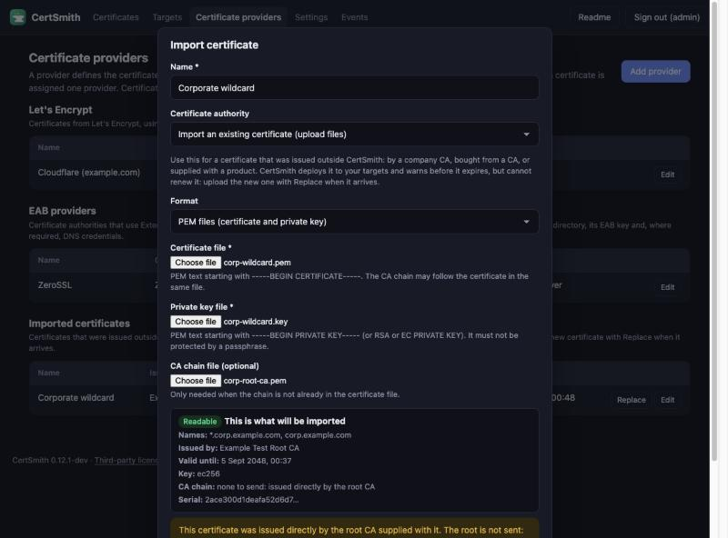
- Formats. A PKCS#12 file (
.p12or.pfx) with its password, or PEM files: the certificate (optionally followed by its CA chain), the private key, and an optional separate chain file. The key must not be protected by a passphrase. The files are read in your browser and sent to CertSmith over the page's own connection; the PKCS#12 password is used once and not stored. - What is checked. The key belongs to the certificate, the certificate is not expired and is not a CA certificate, the key is RSA of 2048 bits or more or ECDSA, and the chain is put in order. Doubtful things (no issuing CA supplied, expiry within 30 days, not marked for servers, a weak signature) are shown as warnings and do not stop the import.
- The chain. The CA certificates that issued it are sent with it to devices. A root CA that was in the files is recognised and not sent: devices and clients are expected to have it.
- Names. They are read from the certificate. An imported certificate cannot have its names edited; only its label and whether it is in use.
- Renewal. CertSmith cannot renew an imported certificate. It appears on the page with an imported label, and expiry alerts work as usual. When the replacement arrives, select Replace on it and upload the new files: targets that were deployed to receive it automatically, as they would a renewal.
Targets
A target is a device or service that uses a certificate. CertSmith talks to it through its API, never by logging in over SSH.
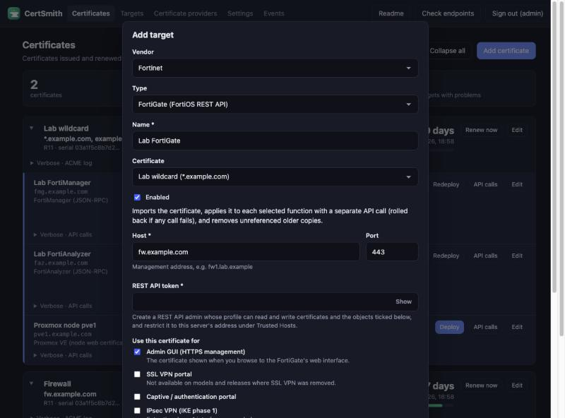
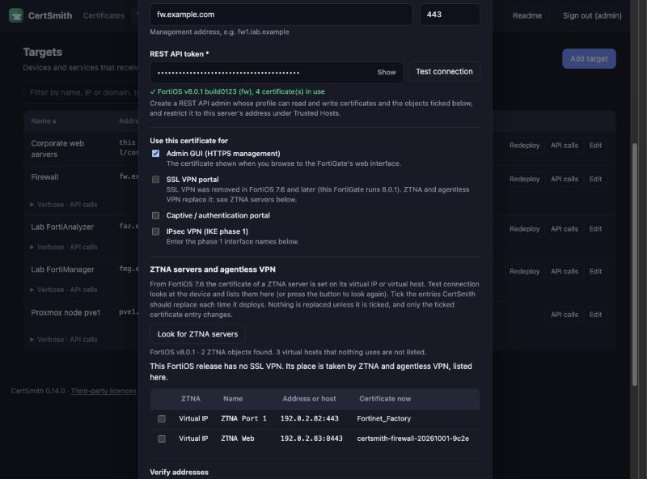
host:port endpoints to check, for example an SSL VPN on another port. An address written as an IP is not listed twice when a name you added resolves to exactly that IP on the same port.Supported targets
| Target | What CertSmith does | What you need on the device |
|---|---|---|
| FortiGate (FortiOS REST) | Imports the certificate, installs the issuing intermediate CAs so that the full chain is sent, and applies the certificate to each selected function (admin GUI, SSL VPN where the release has it, captive portal, IPsec phase 1 or custom bindings) and to each ZTNA server chosen with Look for ZTNA servers, with a separate API call each. A failed step is rolled back, and older unreferenced copies created by CertSmith are removed. Imported certificates are named prefix-name-date-serial and carry a note saying what they are. | A REST API administrator with a profile that can read and write certificates and the ticked objects, restricted to this server's address under Trusted Hosts. |
| FortiManager and FortiAnalyzer (JSON-RPC) | Uploads the certificate, installs the issuing CAs and sets the certificate as the web administration certificate. The web service restarts when the change takes effect, so a dropped connection at that step is expected and is retried. | An API administrator (System Settings → Administrators) with Read-Write on System Settings and an RPC-permitted profile; token authentication needs 7.2.2 or later. |
| Proxmox VE | Uploads the certificate and key for the node and restarts the web proxy. | An API token (user@realm!tokenid=secret) holding Sys.Modify on /nodes/<node>. The built-in Administrator role has it (PVEAdmin does not); a role holding only Sys.Modify is the tighter choice. The target dialog has the steps. |
| Webhook | Sends an HTTP POST with the certificate details as JSON, for systems CertSmith has no plugin for. The private key is included only when that option is enabled. | An endpoint that accepts the POST. An optional Authorization header value can be set. |
| Local files | Writes fullchain.pem, cert.pem, chain.pem and key.pem to a directory on this server, and can run a command afterwards (such as a service reload). | A writable directory. Running a command is switched off unless the server was started with CERTSMITH_ALLOW_COMMANDS=1. |
| Monitor only | Watches a host:port and alerts on expiry or a wrong certificate. Deploys nothing. | Nothing. |
| This server | Replaces the self-signed certificate on CertSmith's own web page. Set it up under Settings → HTTPS certificate. | A name for this server that is in the certificate. |
Testing, trusting and the first deployment
- Test connection checks the address and the token, and that each selected function can be read. It changes nothing on the device.
- A device with only its factory self-signed certificate cannot be verified against a CA. CertSmith displays the certificate presented and asks whether to trust that specific certificate. Compare the fingerprint with the one shown on the device where possible.
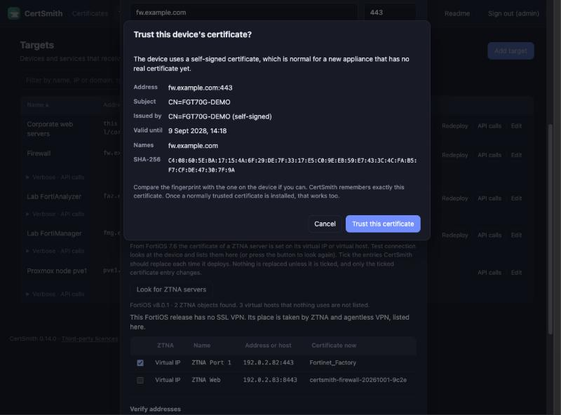
The trust prompt. CertSmith stores the fingerprint of the confirmed certificate. Once a certificate that CertSmith installed is being served, that certificate is trusted as well. - The first deployment is always started manually with Deploy, because it changes the configuration of a live device. Until then the target shows ready: press Deploy.
- Afterwards, renewals are deployed automatically. Pause suspends automatic deployment (renewals are still issued) and Resume restores it. Redeploy runs the deployment again manually, for example after a configuration change on the device. Editing a target so that it installs something different (another certificate, address, or use) makes the next deployment manual again; changing only the addresses to verify, or the certificate you trust for the connection, does not.
- Edit → Delete removes the target from CertSmith. The certificate remains on the device.
What the labels mean
| Label | Meaning |
|---|---|
| 51 days (with a bar) | Time left on the certificate. The colour changes as the renewal window and the alert threshold approach. |
| not issued / failed / cancelled | The certificate has not been issued yet, the last attempt failed (the reason is shown, and the ACME log has the detail), or you stopped it. |
| waiting for certificate | The target's certificate has not been issued yet. |
| ready: press Deploy | A certificate exists and nothing has been deployed to this target yet. |
| pending | A new certificate is issued and about to be deployed automatically. |
| deployed | The current certificate was installed on the device. |
| paused / paused: new certificate waiting | Automatic deployment is paused. Press Resume and anything renewed meanwhile is deployed. |
| deploy failed | The last deployment did not complete. The message says why; the Verbose · API calls panel shows the device's answers. |
| serving | A live check connected to the address and the device presents the certificate CertSmith deployed. |
| serving a different cert | The device answers but presents another certificate. Common causes: the device was not reloaded, a different interface or port serves it, or a load balancer sits in front. |
| unreachable | The live check could not connect. |
| chain incomplete | The device sent only the certificate, not the intermediate CA, so some clients will not trust it. Redeploy with Install the issuing CA certificates left on (the default). |
| NN d left | Days left on the certificate the device is serving. |
| monitoring / disabled | A monitor-only target, or a target you switched off. |
Logs, API calls, and Check endpoints
Check endpoints
The Check endpoints button on the Certificates page (beside Collapse all) checks the certificate that each target is serving. It connects to the address of every target immediately and reads the certificate the device presents. It reports whether this is the certificate CertSmith deployed, how long remains and whether the chain is complete. The check is read-only: nothing is changed on any device. The same check runs automatically on a schedule (every 15 minutes by default, under Settings → Renewal & monitoring).
ACME log
Verbose · ACME log under each certificate is the full record of the last issuance: which CA, which DNS provider, when the record was published, when it was seen, and the CA's responses. It is the first place to check when issuance fails.
API calls
Every request sent to a device is recorded together with the response. Verbose · API calls under each target lists the most recent requests, newest at the bottom, with failures in red.
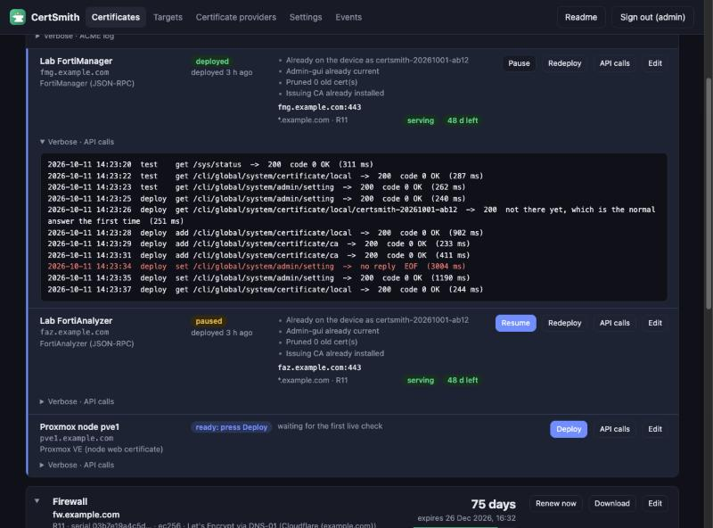
200 and carry the actual result in the response body, so the response text is the relevant part.The API calls button opens the same history in a larger view, together with a description of every call this kind of target can make, when it is sent, and whether it is read-only or changes the device. Certificates, private keys, tokens and request bodies are never recorded.
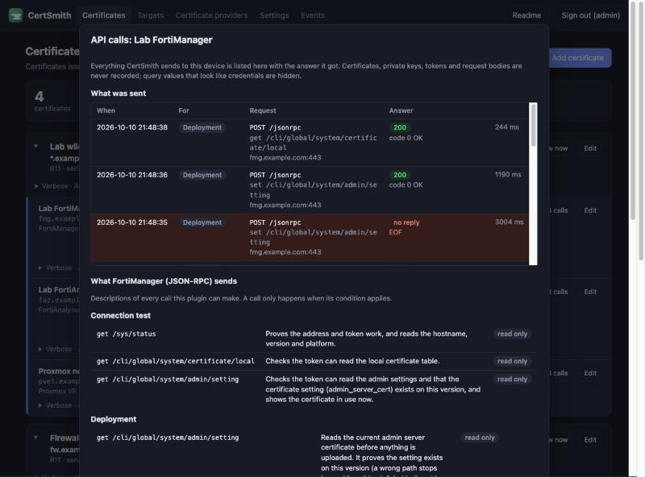
Settings
Settings are grouped under four bars: Issuing and renewal, Alerts, This server and Users. Select a bar to fold or unfold it, or use Collapse all / Expand all. Which bars are folded is remembered in this browser. Values are saved with Save settings whether or not their bar is folded.
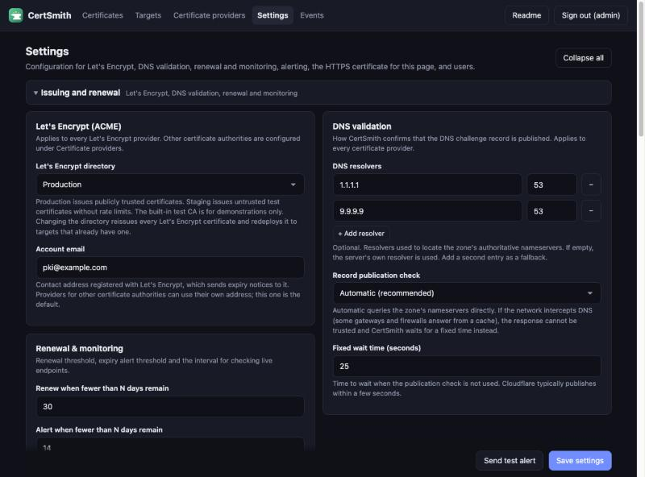
| Card | What it controls |
|---|---|
| Let's Encrypt (ACME) | The directory (Production for publicly trusted certificates, Staging for test certificates, Built-in test CA for demonstrations; certificates from the latter two are not trusted by clients) and the account email. Providers for other CAs are configured under Certificate providers. |
| DNS validation | How CertSmith confirms that the challenge record is published; applies to every provider. DNS resolvers are optional servers used to locate a zone's nameservers (default port 53; + Add resolver adds a second). For Record publication check, Automatic queries the zone's nameservers and waits a fixed time instead if it detects that the network intercepts DNS, where answers cannot be trusted. Either behaviour can be forced. |
| Renewal & monitoring | Renew when fewer than N days remain (30), alert when fewer than N days remain (14), and how often live endpoints are checked (15 minutes). |
| HTTPS certificate | Shows the certificate this page is served with: the self-signed certificate created by CertSmith, or a certificate from a trusted authority. Configure SSL certificate selects one of the managed certificates for the page; CertSmith installs it at once, shows Deploy now if it ever needs to be done again, and renews it automatically. While the page uses the self-signed certificate CertSmith made for itself, CertSmith renews that one by itself 30 days before it expires, and Regenerate certificate (which asks for your password) creates a new one at once, for example after the server's address changed. A regenerated certificate has a new fingerprint: browsers ask again, and a reverse proxy that pins the old one must be updated. Not shown when a reverse proxy provides HTTPS. |
| Software | The installed version and whether a newer release has been published. Once a day CertSmith asks the release host (api.github.com) for the latest release; nothing about this installation is sent. Check now asks immediately, and Check for updates automatically switches the daily check off. When a newer version exists, the card shows the command to run on the server; settings and data are kept, and the previous version is restored if the new one does not start. The version is also shown at the foot of every page. |
| Email alerts, Other alerts, Alert types | The channels and which events go to which. See Alerts. |
| Users | See Users. |
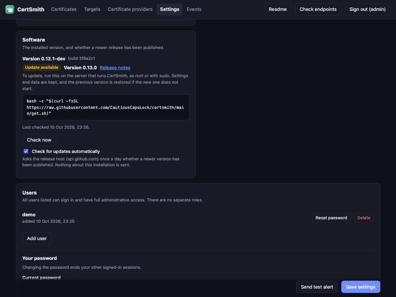
Alerts
CertSmith can send alerts for problems and for routine events. Which events are sent, and where, is selected per event.
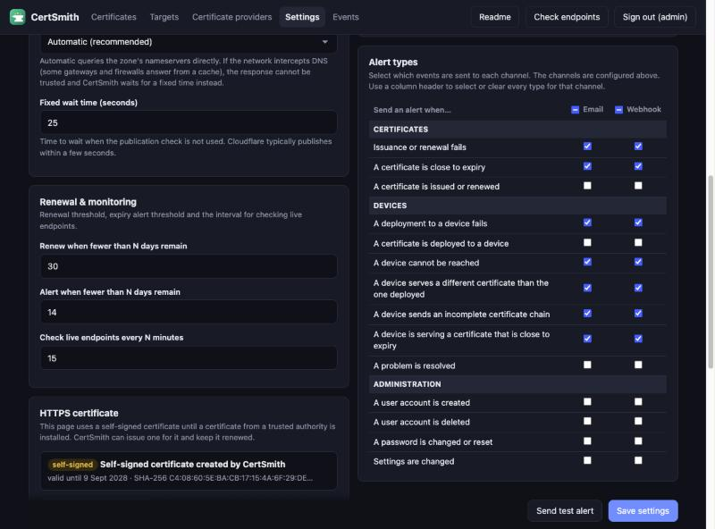
- Configure the channels. Email alerts: enable Send alerts by email and enter the SMTP host, port, security, credentials, from address and recipients. Other alerts: a webhook URL for any endpoint that accepts JSON with a
textfield (Slack, Mattermost, Microsoft Teams and others). Send test alert checks the settings without saving them. - Select the events in Alert types, separately for email and webhook:
- Certificates: issuance or renewal fails, a certificate is close to expiry, a certificate is issued, renewed or imported.
- Devices: a deployment fails or succeeds, a device cannot be reached, serves a different certificate than the one deployed, sends an incomplete chain, or serves a certificate close to expiry, and when a problem is resolved.
- Administration: a user is created or deleted, a password is changed or reset, settings are changed, the web page's self-signed certificate is regenerated or renewed.
- A problem is sent when it first appears and repeated once a day while it persists, not on every check.
- Until a selection is saved, every problem is sent to every configured channel and nothing else is sent (the behaviour of earlier versions).
- CertSmith does not revoke certificates, so there is no revocation alert.
Events
The Events page has two lists.
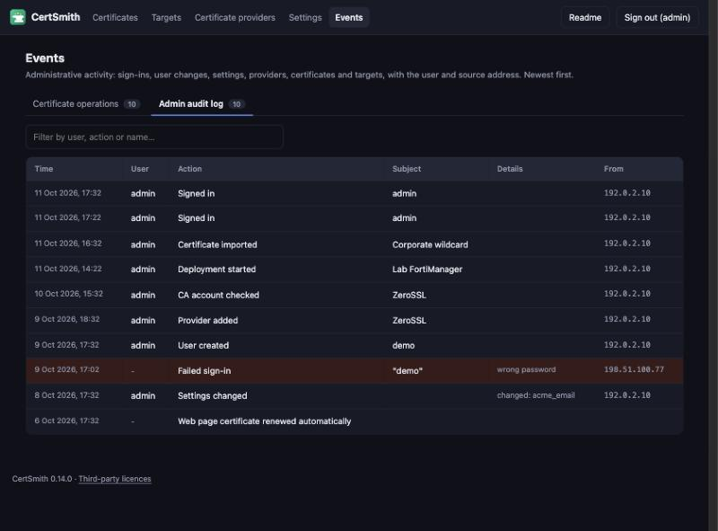
- Certificate operations: what CertSmith itself did: certificates issued and renewed, deployments, live checks, and the alerts raised or cleared.
- Admin audit log: what users did in CertSmith: sign-ins (including failed ones), users created or deleted, passwords changed or reset, settings changed (the setting names, never the values), every check for a newer version (manual, or the automatic daily one with no user), every download of a certificate and its private key, and every provider, certificate and target that was added, changed, deleted, deployed, paused or resumed, with the user and the address they came from.
Both lists have a filter box that narrows the rows as text is entered, for example by user, action, subject or message.
The audit log never contains passwords, tokens or keys. Behind a reverse proxy, list the proxy under Settings, Users, Reverse proxy: the address shown is then the real client's, with the proxy in brackets. Without that setting, an address the proxy reported is shown only as a hint, because anyone who can reach the server directly could forge it.
Users and passwords
- All users listed under Settings → Users can sign in and have full administrative access. There are no roles.
- Add user asks for a username and the new user's password twice. Reset password asks for the new password twice. Both, and Delete, also ask for your own password to confirm, so that a signed-in browser alone cannot create, change or remove accounts.
- Change the signed-in user's password in the Your password section of the same card. Doing so ends the user's other sessions. Sign out ends all of that user's sessions, in every browser, not only the one you are using.
- After 8 failed sign-ins within 10 minutes from one address, or for one user, further sign-ins are refused until the failures age out (at most 10 minutes). It is a temporary lock held in memory: it is not a permanent ban and a restart clears it. Without a trusted proxy configured, every connection through a reverse proxy counts as the proxy's address, so failures from anyone lock sign-in for everyone for that time. Every sign-in, successful, failed or refused (once per lockout), is recorded in the audit log.
- Scripts can call the API with HTTP Basic authentication using any user.
certsmith reset-admin -data /var/lib/certsmith as the service user. The command sets a new random password and prints it. With -wipe, all users are removed and the first-run setup appears again.Backing up
Everything CertSmith knows is in its data directory, normally /var/lib/certsmith. Back up the whole directory and store the backup securely, because it contains private keys.
| File or folder | Contains |
|---|---|
db.json | Providers, certificates, targets, settings and users (secrets inside are encrypted). |
master.key | The key that decrypts every stored token and password. Without it, the stored credentials cannot be recovered. Keep it with the backup. |
session.key | Signs login sessions. Losing it only signs everyone out. |
acme/, certs/, targets/, ui-tls/ | ACME account keys, issued certificates and keys, the API call history, and this page's own certificate. |
Troubleshooting
Issuance waits a long time, then says the record was not found
CertSmith publishes the record, then queries the zone's nameservers to confirm that it is served. On a network that intercepts DNS, the answers come from a cache and can be stale for minutes. Leave Record publication check on Automatic (it detects interception and waits a fixed time instead), or select Always wait a fixed time and increase Fixed wait time. The ACME log states which mode was used.
The DNS provider rejects the credentials, or cannot find the zone
The token needs permission to edit DNS records and to read the zone, for the zone that contains the domain. Use Test DNS challenge on the provider; it tells you which step fails.
Rate limits
Let's Encrypt limits repeated issuances for the same names. While testing, set the directory to Staging in Settings, then back to Production (certificates are reissued automatically).
The device's certificate is "not trusted" when adding a target
This is expected for a new appliance with its factory certificate. CertSmith displays the certificate and asks whether to trust that specific certificate (see Targets).
401 or 403 from a device
The token is incorrect or expired, or the device rejects this server's address. Check the API administrator's profile and its Trusted Hosts.
Deployed, but browsers say the chain is incomplete
The device does not have the intermediate CA. CertSmith installs it by default (Install the issuing CA certificates under the target's Advanced settings). Redeploy; the chain incomplete label clears after the next check.
"Object does not exist" or an EOF in the API call log
Both are normal for FortiManager and FortiAnalyzer: the first is the check for whether a certificate is already uploaded, and the second is the web service restarting when the new certificate takes effect. CertSmith retries and the next line shows success. They only matter when the deployment as a whole fails.
Every target says "waiting for the first live check"
Select Check endpoints on the Certificates page. Otherwise live checks run on the schedule set in Settings.
A device cannot be reached from this server
This server needs outbound access to each device's API address and port, to the CA, to your DNS provider, and to the nameservers it checks. A firewall between this server and the device is the usual cause.
Glossary
| ACME | The protocol CAs use to issue certificates automatically. |
| DNS-01 | Proving you own a name by publishing a specific TXT record at _acme-challenge.<name>. |
| Wildcard | A certificate for *.example.com, valid for any single label under the domain. |
| EAB | External Account Binding: a key ID and HMAC key from a CA that tie your ACME account to your customer account there. |
| Intermediate CA | The CA certificate that signed yours. Devices must send it with the certificate or some clients cannot build the chain. |
| PKCS#12 | A single password-protected file (.p12 or .pfx) that holds a certificate, its private key and usually its CA chain. |
| Staging | A Let's Encrypt test directory that issues untrusted certificates with relaxed limits. |
| Trusted Hosts | A device setting that limits which addresses an administrator account may sign in from. |